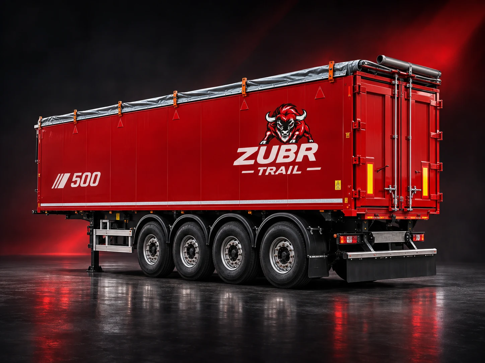
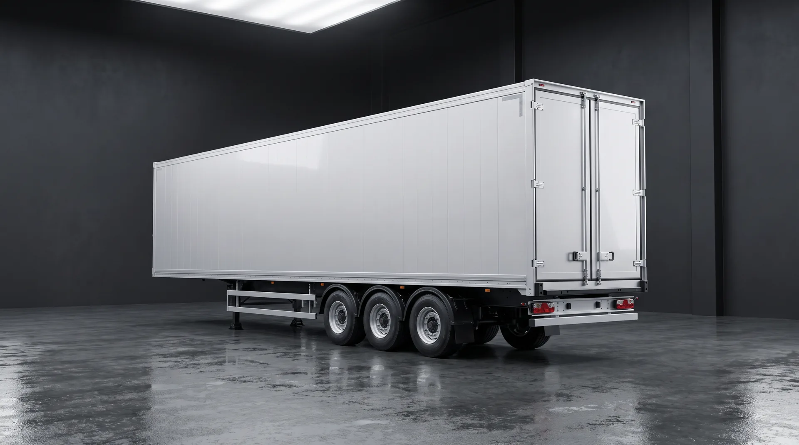

ZUBR TRAIL
ДВЕ МОДЕЛИ / ДВЕ ИСТОРИИ
Два самостоятельных цифровых промо-проекта. SAT-500 — алюминиевый зерновоз для работы с сыпучими грузами. SAT-150 — технология разгрузки с подвижным полом.
Выбрать модель ↗Каждый продукт получил самостоятельную страницу, анимации и интерактивные блоки.

Алюминиевый кузов, задняя самосвальная разгрузка, диапазон объёма 43–55 м³.
Войти в SAT-500 ↗
Разгрузка без подъёма кузова, 90–105 м³, интерактивная схема подвижного пола.
Войти в SAT-150 ↗